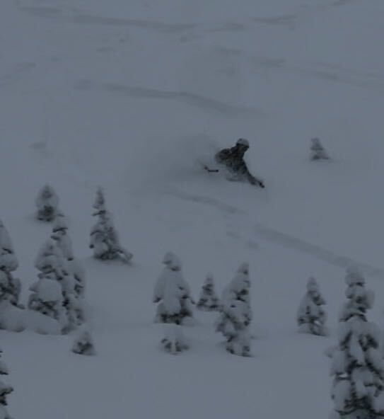
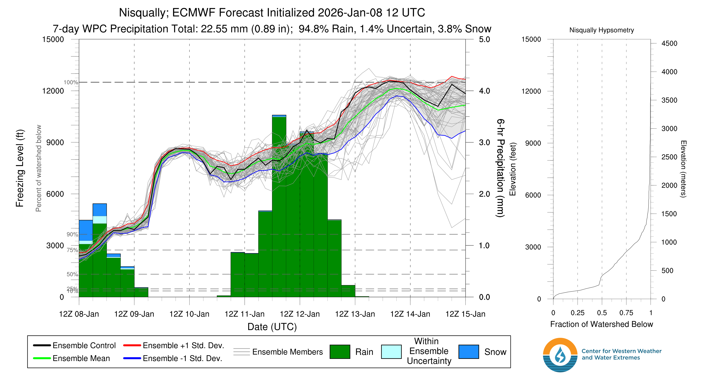
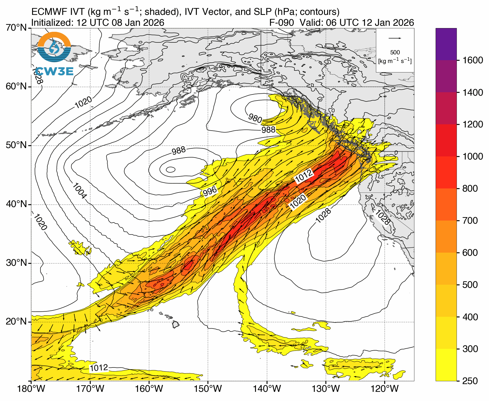
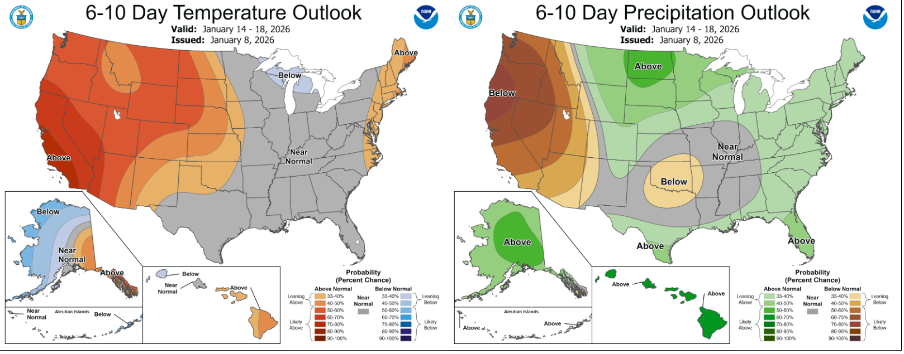

🥊 Winter has finally landed a solid punch, but will it last another round in the ring?
Welcome to The Dendritic Growth Zone!
Past Week's Recap
This forecast wouldn't be complete without a quick recap of this past week's significant snowfall. Over the week, troughing in the Gulf of Alaska shed a series of shortwave troughs down from the northwest into Washington. This set up was heavily assisted by a ridge of high pressure over the eastern Pacific helped usher these systems, and their associated cold temperatures, into the area. However, this also meant there was a strong pressure gradient that drove significant westerly winds over the Cascades. These storms brought several rounds of precipitation to the Cascades, with snow levels dropping towards sea level at times. Orographic enhancement played a big role in boosting snowfall totals. For example, Mt. Baker measured just over 6" of precipitation at the base over hte week. While only 3 feet of accumulation was measured, total snowfall (prior to any settlement) was likely much higher. Over the week, pretty much all locations were winners and many could put the early season low tide conditions to bed.

🧙♂️ Forecast Discussion
Short-term (Friday-Sunday)On Friday, we will see snow showers starting to taper off as a transient ridge builds towards Saturday. Freezing levels will hover around 2500-4500 feet through the day, keeping snow falling at most locations. Saturday's ridge undercuts an atmospheric river that will impact Vancouver Island and coastal BC. This will make for a warmer day with mixed cloud cover. The sun may poke out a few times, but don't expect blue bird conditions. However, we call any day you see blue in the sky a "Washington Blue Bird Day", even if its only for a second. While this ridge will stave off precipitation for the day, it won't last long as we shift into a more sinister (and sadly familiar) setup on Sunday.

Saturday night into Sunday expect precipitation to start up again and freezing levels to trend higher as a level 3 (out of 5) atmospheric river begins. One key metric for these events is integrated vapor transport (IVT) which measures the amount of water being transported at a given time through the atmosphere. Values above 250 kg/m/s are considered AR conditions and this event looks to peak around 500 kg/m/s and last until Tuesday. The tap of warm, subtropical air associated with this AR will continue to increase freezing levels.

Medium-Term (Monday-Wednesday)
The AR will peak in intensity on Monday, but continue through Tuesday. As the event ends, freezing levels will spike even higher until the system moves out an the ridge can build to cut off the subtropical warm air through the end of next week.
🧙🔮🧙♂️ Reading the crystal ball - 7+ day outlook
There is strong agreement across models on continued ridging over the area over the next 7-10 days. This will coincide with anomalously warm and dry conditions for the Pacific Northwest. Not great for our sensitive snowpack... However, there is some (minimal) hope! On one front, maybe we can set up a January corn harvest for MLK. In the longer term, some models hint that the stout ridge could retrograde back westward after MLK weekend and allow cold air (and maybe some more shortwaves??) to come from the north. Yet, this signal is quite weak, so we will have to wait and see how this progresses.

❄️ Snowfall
Weekend Snow Accumulation Forecast
| Site | Through 4am Saturday | Through 4am Sunday | Weekend Snow Accumulation (4pm Thursday through 4am Monday 5 Jan) |
|---|---|---|---|
| Mt. Baker (4500') | 3-6" | 3-6" | 8-12" |
| Washington Pass | 2-4" | 2-4" | 4-6" |
| Stevens Pass (4500') | 5-8" | 5-8" | 6-10" |
| Hurricane Ridge | 2-4" | 2-4" | 2-5" |
| Blewett Pass | 1-3" | 1-3" | 1-4" |
| Snoqualmie Pass | 1-5" | 1-5" | 1-5" |
| Crystal (5000') | 0" | 2-6" | 6-12" |
| Paradise | 8-12" | 8-12" | 12-16" |
| White Pass (5000') | 3-6" | 3-6" | 4-8" |
🧊 Freezing Level
- Friday: 2500-4500 feet
- Saturday: 3500 (AM)-8500 (PM) feet
- Sunday: 5500-8500 feet
🎿 Our Recommendations
Best Choice This Weekend: Avoid Sunday
Our beautiful new snow will start to degrade on Sunday as freezing levels rise and rain begins to mix in at lower elevations. Saturday looks like the best day to get out and enjoy the fresh snow throughout the region. Farm it while it lasts!
Runner-Up: Paradise
Snow stacked up nicely this week around Paradise. With no precipitation expected early Saturday and the potential for some sun breaks, this could be a nice day to get out and enjoy the beauty surrounding Tahoma.